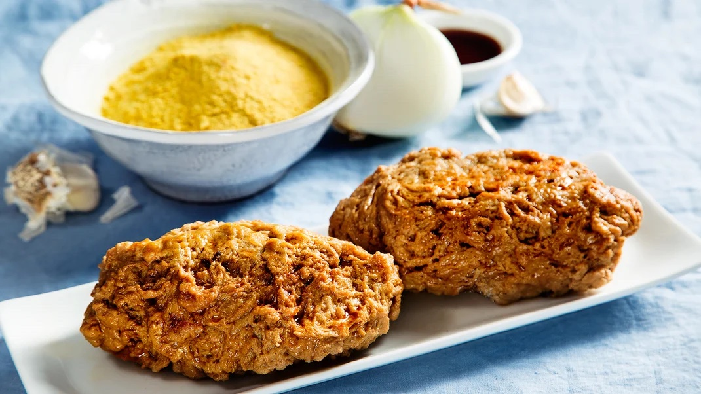

Homemade Seitan Recipe

Description
Seitan is essentially a dough made with vital wheat gluten, a high-protein wheat flour, and liquid. The dough can be rinsed or poached to become a chewy meat substitute that can be added to many different dishes.
Ingredients
- 2 cups vital wheat gluten
- 1 ½ cup nutritional yeast
- 2 teaspoon garlic powder
- 5 cups low-sodium vegetable broth, divided
- 2 tablespoons soy sauce
- ½ small onion diced
- 1 clove garlic, crushed
Steps
- Combine wheat gluten, yeast, and garlic powder in large bowl. Stir in 1 cup broth and soy sauce until dough forms, adding more broth if necessary. Knead dough in bowl with spoon 3 minutes, or until elastic. Shape into 2 loaves.
- Place loaves in large saucepan, and add remaining 4 cups broth, onion, garlic, and enough water to cover seitan. Cover, and bring to a boil over medium heat. Reduce heat to medium-low, and simmer 30 to 45 minutes, or until seitan is firm. Remove from heat, and cool in broth.